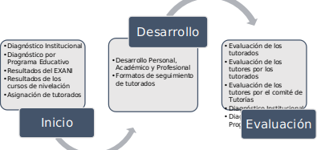
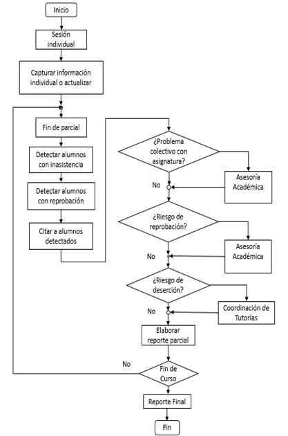

Uno de los elementos primordiales de este modelo es la necesidad de contar con diagnósticos institucionales y por programa educativo de las necesidades de los estudiantes. En la Figura 2 se puede observar el desarrollo del programa considerando tres momentos: inicio del semestre, desarrollo de las actividades y el momento de cierre o evaluación.
Figura 2. Funcionamiento del Programa Institucional de Tutorías
El proceso inicia con la obtención y análisis de los resultados del EXANI y de los cursos de nivelación para determinar el estado académico de los estudiantes de nuevo ingreso. De igual manera se contempla la asignación de tutorados para tener control de los estudiantes asignados.
Para la fase de evaluación, se incluye un momento para que los tutorados evalúen el desempeño de sus tutores, la evaluación de desarrollo de habilidades por parte de los tutores a los tutorados y se agregó una evaluación de los tutores por parte del comité de tutorías como un mecanismo para evaluar el estado de los grupos y poder hacer un diagnóstico general por programa educativo e institucional.
En la Figura 3 se presenta el diagrama de flujo que describe las principales actividades del Tutor en el que se puede apreciar como en una sesión presencial da seguimiento de sus Tutorados y monitorea tanto su rendimiento académico como detecta posibles estudiantes que pudieran desertar y como estas actividades se plasman en los diferentes formatos.
Figura 3. Proceso general de la tutoría.
A continuación se describen cada una de los elementos de la tutoría grupal e individual que se requieren para el desarrollo de actividades.
< >